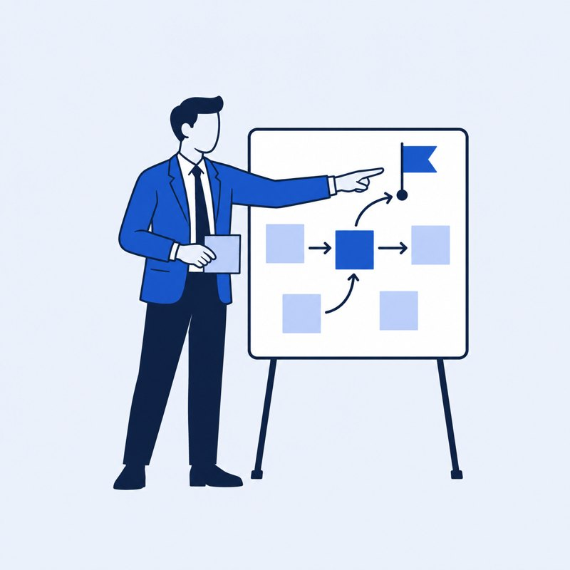
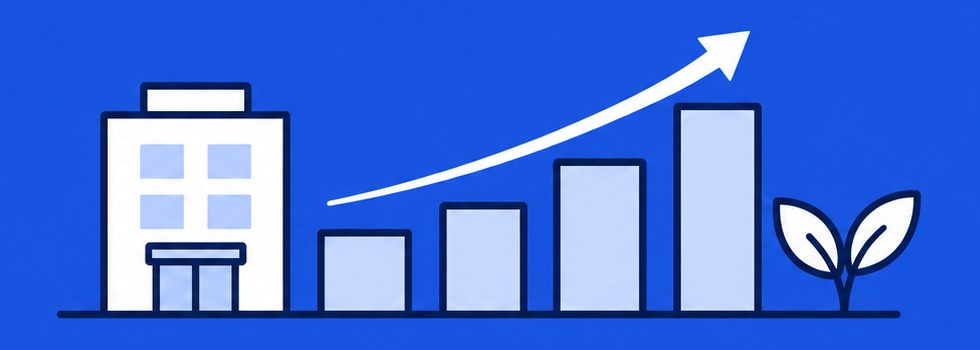

SERVICE A
制作・作業代行
WEBページ/LP制作/システム開発等の制作や作業の月額・スポット代行
こんな企業様におすすめ
すでに内容が決まっており設計書やデモはあるが、比較的単純でスピード感持って実施したい制作物や作業に自社リソースをあまり掛けたくない企業様におすすめ！
PRODUCTION & DEVELOPMENT PARTNER
Web・LP制作からシステム開発、Salesforce、AI活用まで。案件ごとに責任あるチームを組成し、企業の制作・開発の実行を支援します。
WHAT WE DELIVER
運営：ニチハク商事株式会社
01 — WHY
人材側の壁
経験や言語・職歴の違いが、挑戦の壁になる。
スキルや意欲があっても、実務経験や言語・職歴の違いによって、力を発揮できる機会にたどり着けない人がいます。
企業に眠る課題
やりたいことはある。でも、実行する手が足りない。
社内の人材や実行体制が足りず、技術職の採用も思うように進まない。制作や開発が後回しになっている企業が増えています。
UNS→Nは、この二つの課題を「ひとつの仕事」でつなぎます。
02 — HOW
人員編成・指示・進行・品質管理は、自社が責任を持って担います。

BUSINESS LEAD
事業・プロジェクト統括責任者
課題整理・案件方針の策定・チーム編成・全体推進
TECH LEAD
PM兼開発責任者
要件整理・開発体制の設計・進行管理・品質確認
PROJECT TEAM
案件別チーム
案件に必要なスキルを持つ、多様な背景のメンバー
OUTCOME
企業の成果へ
責任者と案件別チームが一体となり、お預かりした仕事を企業の成長につなげます。

03 — SERVICES
SERVICE A
WEBページ/LP制作/システム開発等の制作や作業の月額・スポット代行
こんな企業様におすすめ
すでに内容が決まっており設計書やデモはあるが、比較的単純でスピード感持って実施したい制作物や作業に自社リソースをあまり掛けたくない企業様におすすめ！
SERVICE B
要件定義〜システム開発までスポット及び一気通貫でサポート可能。LPやWEBサイト、WEBシステム開発、Salesforce運用・改修
こんな企業様におすすめ
社内でのリソースを使わずに、新しいサービスのPoCや既存システムの改修など、プロジェクト単位で依頼をしたい企業様におすすめ！
SERVICE C
社内業務の効率化やAI・デジタル化サポートに一緒にお取り組み可能
こんな企業様におすすめ
現在の社内業務や仕組みを効率よくしたいけど、社内リソースが足りず、一緒に取り組んでくれるパートナーを探している企業様におすすめ！
04 — LEADERSHIP

事業・プロジェクト統括責任者
JORGE IMAMURA
企業課題の整理から案件方針の策定、チーム編成、プロジェクト全体の推進を統括。顧客と専門人材の双方を理解し、成果につながる協働体制をつくります。

PM兼開発責任者
RAFAEL WATANABE
Web制作・システム開発・Salesforce構築などの幅広い経験を活かし、技術的な要件整理、開発・制作体制の設計、進行管理と品質確認を担当します。
05 — CONTACT
案件の内容が固まっていなくても大丈夫です。ご要望を伺い、必要な体制とお見積もりをご提案します。